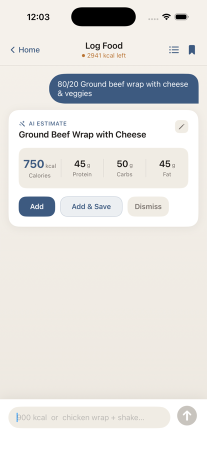

Today
Know what to do now.
Your daily screen turns the plan into a clear next action, without burying you in charts.

 Bulk Tracker
Bulk Tracker
Adaptive calorie & weight gain coach
Bulk Tracker turns your calorie targets, food logs and weigh-ins into one focused daily plan—so you know what to repeat and when to adjust.

Built for iPhone. Your current options are shown on the App Store.
For hardgainers who are tired of guessing
A static calorie calculator cannot see whether your body weight is actually moving.
A single weigh-in can make a good plan feel broken. Random changes make progress harder to read.
Bulk Tracker keeps the plan tied to the evidence you create each day.
02 / How it works
Set the direction once. Then let your food logs and weight trend show what should happen next.
Choose the pace you want and start with a clear calorie and macro target.
Add food, review the estimate and see exactly what is left before the day is over.
Check your progress over time and keep the plan steady when the evidence says it is working.
Today
Your daily screen turns the plan into a clear next action, without burying you in charts.
Log
Describe a meal, review the nutrition estimate and save it when it looks right.

Progress
Follow your weight trend and goal pace so one unusual day does not derail a working plan.

03 / What changes
See your calories and macros as part of a real weight gain goal—not isolated numbers.
Use the trend to decide whether the plan needs attention instead of reacting too soon.
Know what is logged, what is left and what deserves your attention before the day ends.
04 / Built for control
Review before saving. AI-assisted meal estimates remain yours to check and edit.
See the evidence. Daily execution and longer-term progress live in separate, focused views.
Choose the pace. Your goal sets the direction; the app helps you follow it consistently.
05 / Questions
It is designed for people who want to gain weight with a clear calorie, macro and progress-tracking routine—especially hardgainers who are tired of changing plans without enough evidence.
You can describe what you ate, review the AI-assisted nutrition estimate and choose whether to add it. Estimates should always be checked before saving.
No. Bulk Tracker is a planning and tracking tool. It does not diagnose or treat medical conditions. Speak with a qualified professional when health guidance is needed.
The App Store shows the current download availability and any purchase or subscription options before you confirm anything.
Email degeestkenneth@gmail.com and include “Bulk Tracker” in the subject.
One plan. Clear evidence. Better decisions.